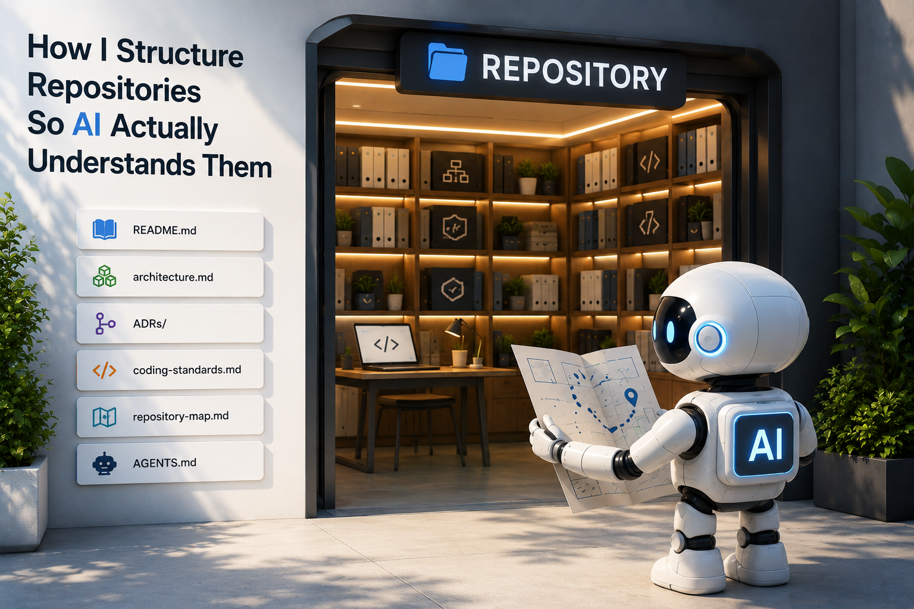

Over the last year, coding assistants have become part of everyday software engineering.
Whether you use Claude Code, ChatGPT, GitHub Copilot, Cursor, Windsurf, Codex, or something else, the workflow is increasingly familiar.
- A human describes the change.
- The AI reads the repository.
- The AI generates code.
- The human reviews and approves.
Simple enough.
But many teams run into a frustrating pattern.
One day the assistant produces excellent code. The next day it ignores existing patterns, violates architecture decisions, or introduces complexity that does not belong in the system.
Developers often blame the model.
Sometimes that is fair. But in many cases, the repository is the real problem.
The AI is only as good as the context it can discover.
If architecture exists only inside senior engineers' heads, the AI cannot use it. If standards are hidden in old wiki pages, the AI cannot follow them. If important decisions were made six months ago but never documented, the AI will happily reinvent them.
In my previous article, I wrote about the context problem and why AI can seem brilliant one day and lost the next.
This article is the practical next step.
Increasingly, a repository is no longer just source code. It is the knowledge base from which AI learns how your system works.
What AI Actually Needs
Most repositories contain something like this:
src/
tests/
pom.xml
README.mdThat may be enough for a human who already knows the organization, the product, and the team's habits.
It is often not enough for AI.
A coding assistant needs answers to questions like:
- What does this system do?
- How is it structured?
- What architectural patterns are allowed?
- Which patterns are forbidden?
- How should code be written?
- Where should new functionality go?
- Why were certain decisions made?
- What should an AI agent do before making changes?
If these answers are missing, the assistant fills the gaps with assumptions.
And assumptions are expensive.
The Layers of AI-Friendly Repository Context
I think of repository documentation as five basic layers of context.
Each layer answers a different question.
| Layer | Question answered |
|---|---|
| README | What is this system? |
| Architecture docs | How is it structured? |
| ADRs | Why was it designed this way? |
| Coding standards | How should code be written? |
| Repository map | Where does everything belong? |
None of these are new ideas. The shift is that they now have two audiences.
Humans need them.
AI agents need them too.
Layer 1: README as Purpose
Most READMEs are written for GitHub visitors.
I now write them for both humans and AI.
A weak README says:
Customer Management System
Built using Spring Boot.A useful README says:
Customer Management System
Purpose:
Manage customer onboarding, profile maintenance,
document verification, and lifecycle management.
Architecture:
- Spring Boot microservices
- Event-driven integration
- PostgreSQL
- Kafka
Key Services:
- customer-service
- onboarding-service
- document-service
Important Constraints:
- Customer data is immutable after approval
- All external communication happens through events
- No direct service-to-service database accessNotice what changed.
The second version explains business purpose, architecture, services, and constraints. That is the kind of context that changes the output.
If you ask:
Add customer approval functionality.
With a poor README, the assistant has to guess. Maybe it adds an approval status column. Maybe it creates a REST endpoint. Maybe it writes directly to the database.
With a richer README, the assistant can see that approval should trigger an event, customer data becomes immutable, and Kafka integration matters.
Same prompt. Different repository. Completely different output quality.
Layer 2: Architecture Documentation as Structure
An architecture document is one of the most valuable files in an AI-assisted repository.
Humans learn architecture slowly through experience. AI usually has only minutes.
Help it.
# System Architecture
## Style
Microservices
## Communication
Synchronous:
- REST APIs
Asynchronous:
- Kafka events
## Data Ownership
Each service owns its database.
Cross-service database access is forbidden.
## Security
JWT authentication
## Deployment
KubernetesThis single document eliminates many bad suggestions.
Without it, a model may generate code where CustomerService directly queries the order database because it has seen that pattern elsewhere.
The architecture document tells it: not in this repository.
Simple diagrams help too. They do not need to be polished. A small text or Mermaid diagram can be enough to show service boundaries, data ownership, and message flow.
Layer 3: ADRs as Decision Memory
Architecture Decision Records are still underrated.
Many teams document architecture. Fewer document the decisions that created it.
AI needs both.
An ADR captures the problem, alternatives, decision, and consequences:
ADR-001
Title:
Use Event-Driven Integration
Status:
Accepted
Context:
Services need loose coupling.
Options:
1. REST
2. Shared database
3. Kafka events
Decision:
Kafka events
Consequences:
- Eventual consistency is required
- Consumers must handle duplicate eventsSuppose an assistant sees Kafka, RabbitMQ, and REST references inside a repository.
Which integration mechanism should it choose?
Without ADRs, it guesses.
With ADRs, it knows what the team chose and why.
That reduces architectural drift.
Layer 4: Coding Standards as Operating Rules
Most organizations already have coding standards.
The problem is that they often exist only in people's memories.
AI cannot read memories.
# Java Standards
Naming:
- Classes: PascalCase
- Methods: camelCase
Controllers:
- Thin controllers only
Services:
- Business logic belongs here
Repositories:
- No custom SQL unless approved
Logging:
- Structured logging only
Testing:
- Minimum 80% coverageWithout standards, an assistant may produce a 500-line controller, use System.out.println, or invent naming conventions that do not fit the codebase.
With standards, output becomes more consistent.
I also like including good examples under something like docs/examples/:
docs/examples/
- good-rest-controller.md
- good-event-publisher.md
- good-unit-test.mdThen I explicitly tell the assistant to follow those examples.
Models learn heavily from concrete examples. Give them the examples you actually want copied.
Layer 5: Repository Map as Navigation
Large repositories are difficult for humans.
They are difficult for AI too.
A repository map acts as a guide.
# Repository Map
/customer-service
Customer lifecycle management
/order-service
Order processing
/payment-service
Payment handling
/common-lib
Shared utilities
/docs
Architecture and standards
/tests
Integration testsFor larger repositories, the map can go one level deeper:
/customer-service
- controller
- service
- repository
- events
- config
- securityNow the assistant has a better chance of putting new functionality in the right place.
Without a map, a prompt like Add fraud check functionality starts with exploration and guessing. With a map, the assistant can start from the right module, spend fewer tokens searching, and make a more focused change.
The Sixth Layer: AGENTS.md
Everything so far is good engineering practice even without AI.
AGENTS.md is different.
It exists specifically for AI agents.
A README explains the system. An AGENTS.md explains how an AI should operate inside the system.
# AGENTS.md
Before making changes:
1. Read architecture.md
2. Review relevant ADRs
3. Follow coding-standards.md
Architecture Constraints:
- Event-driven architecture
- No shared databases
- PostgreSQL only
Development Rules:
- Add tests for new functionality
- Follow existing package structure
- Reuse existing libraries
Forbidden Actions:
- Do not introduce new frameworks
- Do not bypass event publishing
- Do not modify public APIs without approval
Pull Request Checklist:
- Tests passing
- Documentation updated
- Architecture constraints respectedThis file reduces the chance of AI going off in unexpected directions.
Imagine asking an assistant:
Implement customer onboarding workflow.
Without AGENTS.md, the model explores, infers patterns, and makes assumptions.
With AGENTS.md, it already knows what to read first, which constraints matter, what actions are prohibited, and what a complete change should include.
My Typical Repository Template
Today, a new project of mine usually starts with a structure like this:
repo/
|-- README.md
|-- AGENTS.md
|
|-- docs/
| |-- architecture.md
| |-- repository-map.md
| |-- coding-standards.md
| |
| `-- adr/
| |-- 001-event-driven-architecture.md
| |-- 002-postgres-choice.md
| `-- ...
|
|-- src/
|-- tests/
`-- scripts/Nothing here is complicated.
Most of these files are simply good engineering practices. The difference is that they are now written with two readers in mind.
Humans.
And AI agents.
The Bigger Lesson
Most discussions about AI-assisted development revolve around prompts.
Prompt engineering matters.
But repository engineering matters more than many teams realize.
A well-structured repository provides:
- Purpose
- Structure
- Decisions
- Rules
- Navigation
- Instructions
When those things are documented, AI becomes more predictable.
When they are missing, the model fills the gaps with assumptions.
Software engineering has always been expensive when assumptions replace documentation.
Ten years ago, we onboarded developers.
Today, we onboard developers and AI agents.
The best repositories are starting to recognize that both need documentation.
The only difference is that one reads it with coffee in hand.
The other reads it one token at a time.